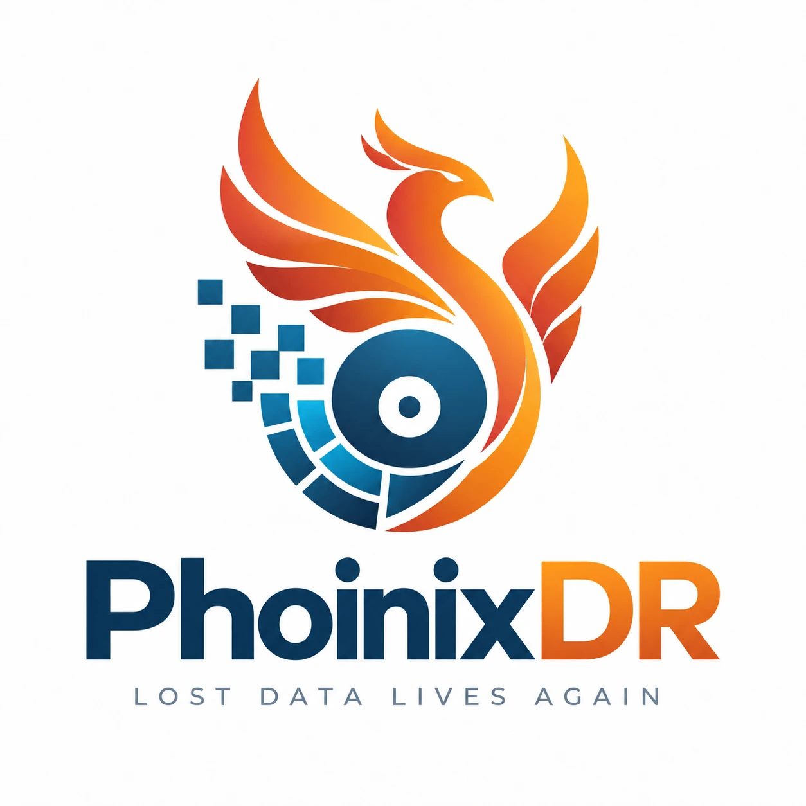

Recupere archivos perdidos.
Conozca sus posibilidades.
Recuperación basada en evidencia desde discos, memorias USB, tarjetas SD e imágenes de disco. Nunca se escribe nada en la fuente.
Un único ejecutable, sin instalación. Windows 10 (21H2+) u 11. Última versión: véase GitHub. Sumas de comprobación y detalles.
PhoinixDR se proporciona «tal cual» y se utiliza enteramente bajo su propio riesgo. La recuperación de datos es incierta por naturaleza, y un uso inadecuado puede provocar la pérdida permanente de datos o daños. Siempre que sea posible, trabaje a partir de una copia o de una imagen de disco y recupere los archivos en un dispositivo de almacenamiento distinto.
Recupere archivos borrados
Lectores nativos para cada sistema de archivos encuentran los registros borrados, reconstruyen nombres y rutas y, en ext3/ext4, rescatan las disposiciones desde el diario. Lo que no tiene un sistema de archivos reconocible se talla por firma.
Sepa antes de recuperar
PHOINIX no se limita a encontrar archivos borrados. Analiza la evidencia que determina si los datos originales siguen siendo recuperables.
Cada archivo lleva una probabilidad de recuperación y una confianza de la evaluación, y cada número viene con sus razones: ¿se conoce la disposición?, ¿se han reutilizado sus clústeres?, ¿el contenido sigue validándose como JPEG, PDF o ZIP?
Un motor, todas las situaciones
Escaneo rápido
Archivos borrados a través de los metadatos del sistema de archivos: nombres, rutas, fechas y disposiciones en segundos.
Escaneo profundo
Talla el espacio no asignado por firma y valida la estructura de cada archivo. Encuentra lo que los metadatos ya no describen.
Recuperación de particiones
Encuentra volúmenes perdidos por sus propias estructuras y los monta virtualmente. La tabla de particiones nunca se reescribe.
Tallado de archivos
JPEG, PNG, GIF, BMP, PDF, ZIP y Office, SQLite, RIFF, MP4, 7z, y sus propias firmas.
Imágenes de disco
RAW, RAW dividida, E01 y E01 dividida, VHD, VHDX, VMDK, con verificación de hashes e informes de caso para el trabajo forense.
Línea de comandos
El mismo motor que phoinix: automatizable, JSON en todas partes, puntuaciones explicables.
Código abierto por diseño
Solo lectura respecto a la fuente, puntuaciones explicables, fixtures deterministas con verdad criptográfica, registros de decisión para cada elección de arquitectura. PHOINIX se construye a la vista de todos para que el código y las decisiones que hay detrás puedan inspeccionarse y cuestionarse. Sí, PHOINIX está «vibecodeado», y deliberadamente; lea de dónde viene.